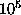

Next: About this document
Up: Surrogate time series
Previous: Annealed surrogates
References
- 1
-
A. S. Weigend and N. A. Gershenfeld, eds.,
``Time Series Prediction: Forecasting the future and understanding the
past'',
Santa Fe Institute Studies in the Science of Complexity, Proc. Vol. XV,
Addison-Wesley, Reading, MA (1993).
- 2
-
E. Ott, T. Sauer, and J. A. Yorke,
``Coping with Chaos'',
Wiley, New York (1994).
- 3
-
H. D. I. Abarbanel,
``Analysis of Observed Chaotic Data'',
Springer-Verlag, Berlin, Heidelberg, New York (1996).
- 4
-
H. Kantz and T. Schreiber,
``Nonlinear Time Series Analysis''.
Cambridge University Press, Cambridge (1997).
- 5
-
T. Schreiber,
Interdisciplinary application of nonlinear time series methods,
Phys. Reports 308, 1 (1998).
- 6
-
J. Theiler, S. Eubank, A. Longtin, B. Galdrikian, and J. D. Farmer,
Testing for nonlinearity in time series: The method of surrogate data,
Physica D 58, 77 (1992); Reprinted in [2].
- 7
-
J. Theiler, P. S. Linsay, and D. M. Rubin,
Detecting nonlinearity in data with long coherence times,
in [1].
- 8
-
J. Theiler and D. Prichard,
Using `Surrogate Surrogate Data' to calibrate the actual rate of
false positives in tests for nonlinearity in time series,
Fields Inst. Comm. 11, 99 (1997).
- 9
-
R. Hegger, H. Kantz, and T. Schreiber,
Practical implementation of nonlinear time series methods: The
TISEAN package,
CHAOS 9, 413 (1999).
The software package is publicly available at
10
-
T. Subba Rao and M. M. Gabr,
``An introduction to bispectral analysis and bilinear time series models'',
Lecture notes in statistics Vol. 24,
Springer-Verlag, Berlin, Heidelberg, New York (1984).
- 11
-
C. Diks, J. C. van Houwelingen, F. Takens, and J. DeGoede,
Reversibility as a criterion for discriminating time series,
Phys. Lett. A 201, 221 (1995).
- 12
-
J. Timmer, C. Gantert, G. Deuschl, and J. Honerkamp,
Characteristics of hand tremor time series,
Biol. Cybern. 70, 75 (1993).
- 13
-
T. Schreiber and A. Schmitz,
Discrimination power of measures for nonlinearity in a time series,
Phys. Rev. E 55, 5443 (1997).
- 14
-
M. Palus,
Testing for nonlinearity using redundancies: Quantitative and
qualitative aspects,
Physica D 80, 186 (1995).
- 15
-
B. Pompe,
Measuring statistical dependencies in a time series,
J. Stat. Phys. 73, 587 (1993).
- 16
-
D. Prichard and J. Theiler,
Generalized redundancies for time series analysis,
Physica D 84, 476 (1995).
- 17
-
B.-L. Hao,
``Elementary Symbolic Dynamics'',
World Scientific, Singapore (1989).
- 18
-
M. B. Kennel, R. Brown, and H. D. I. Abarbanel,
Determining embedding dimension for phase-space reconstruction using
a geometrical construction,
Phys. Rev. A 45 3403 (1992); Reprinted in [2].
- 19
-
D. Pierson and F. Moss,
Detecting periodic unstable points in noisy chaotic and limit cycle
attractors with applications to biology,
Phys. Rev. Lett. 75, 2124 (1995).
- 20
-
P. So, E. Ott, S. J. Schiff, D. T. Kaplan, T. Sauer, and C. Grebogi,
Detecting unstable periodic orbits in chaotic experimental data,
Phys. Rev. Lett. 76, 4705 (1996).
- 21
-
M. Barahona and C.-S. Poon,
Detection of nonlinear dynamics in short, noisy time series,
Nature 381, 215 (1996).
- 22
-
J. E. Skinner, M. Molnar, and C. Tomberg,
The point correlation dimension: Performance with nonstationary
surrogate data and noise,
Integrative Physiological and Behavioral Science 29, 217 (1994).
- 23
-
M. S. Roulston,
Significance testing on information theoretic functionals,
Physica D 110, 62 (1997).
- 24
-
K. Dolan, A. Witt, M. L. Spano, A. Neiman, and F. Moss,
Surrogates for finding unstable periodic orbits in noisy data sets,
Phys. Rev. E 59, 5235 (1999).
- 25
-
J. Theiler and D. Prichard,
Constrained-realization Monte-Carlo method for hypothesis testing,
Physica D 94, 221 (1996).
- 26
-
T. Schreiber,
Constrained randomization of time series data,
Phys. Rev. Lett. 80, 2105 (1998).
- 27
-
W. A. Brock, W. D. Dechert, J. A. Scheinkman, and B. LeBaron,
``A test for independence based on the correlation dimension'',
University of Wisconsin Press, Madison (1988).
- 28
-
J. Theiler and S. Eubank,
Don't bleach chaotic data,
CHAOS 3, 771 (1993).
- 29
-
B. Efron,
``The jackknife, the bootstrap and other resampling plans'',
SIAM, Philadelphia, PA (1982).
- 30
-
T. Schreiber and A. Schmitz,
Improved surrogate data for nonlinearity tests,
Phys. Rev. Lett. 77, 635 (1996).
- 31
- D. R. Rigney, A. L. Goldberger, W. Ocasio, Y. Ichimaru, G. B. Moody, and
R. Mark,
Multi-channel physiological data: Description and analysis,
in [1].
- 32
-
N. E. Graham, J. Michaelsen, and T. P. Barnett,
An investigation of the El Nino-Southern Oscillation cycle
with statistical models - 1. Predictor field characteristics,
J. Geophys. Res. 92, 1425 (1987);
N. E. Graham, J. Michaelsen, and T. P. Barnett,
An investigation of the El Nino-Southern Oscillation cycle
with statistical models - 2. Model results,
J. Geophys. Res. 92, 1427 (1987).
- 33
-
C. L. Ehlers, J. Havstad, D. Prichard, and J. Theiler,
Low doses of ethanol reduce evidence for nonlinear structure in brain
activity,
J. Neuroscience 18, 7474 (1998).
- 34
-
D. Prichard and J. Theiler,
Generating surrogate data for time series with several simultaneously
measured variables,
Phys. Rev. Lett. 73, 951 (1994).
- 35
-
T. Bäck,
``Evolutionary algorithms in theory and practice: evolution strategies,
evolutionary programming, genetic algorithms''
Oxford Univ. Press (1996).
- 36
-
N. Metropolis, A. Rosenbluth, M. Rosenbluth, A. Teller, and E. Teller,
Equations of state calculations by fast computing machine,
J. Chem. Phys. 21, 1097 (1953).
- 37
-
S. Kirkpatrick, C. D. Gelatt Jr., and M. P. Vecchi,
Optimization by Simulated Annealing,
Science 220, 671 (1983).
- 38
-
R. V. V. Vidal, ed.,
``Applied simulated annealing'',
Lecture notes in economics and mathematical systems Vol. 396,
Springer-Verlag, Berlin, Heidelberg, New York (1993).
- 39
-
D. Kugiumtzis,
Test Your Surrogate Data before You Test for Nonlinearity,
Physical Review E, in press (1999)
- 40
-
T. Bollerslev,
Generalized autoregressive conditional heteroscedasticity,
J. Econometrics 31, 207 (1986).
- 41
-
E. Parzen, editor, ``Time Series Analysis of Irregularly Observed Data'',
Lecture Notes in Statistics Vol. 25,
Springer-Verlag, Berlin, Heidelberg, New York, (1983).
- 42
-
W. H. Press, B. P. Flannery, S. A. Teukolsky, and W. T. Vetterling,
``Numerical Recipes'', second edition,
Cambridge University Press (1995).
- 43
-
T. Schreiber and A. Schmitz,
Testing for nonlinearity in unevenly sampled time series,
Phys. Rev. E 59, 4044 (1999).
- 44
-
P. M. Grootes and M. Stuiver,
Oxygen 18/16 variability in Greenland
snow and ice with to -year time resolution,
J. Geophys. Res. 102, 26455 (1997).
- 45
-
The Greenland Summit Ice Cores CD-ROM (1997). Available from the National
Snow and Ice Data Center, University of Colorado at Boulder, and the World
Data Center-A for Paleoclimatology, National Geophysical Data Center,
Boulder, Colorado.
- 46
-
E. J. Steig, P. M. Grootes, and M. Stuiver,
Seasonal precipitaion timing and ice core records
Science 266 1885 (1994).
- 47
-
G. W. Frank, T. Lookman, M.A.H. Nerenberg, C. Essex, J. Lemieux,
and W. Blume,
Chaotic time series analyses of epileptic seizures,
Physica D 46, 427 (1990).
- 48
-
J. Theiler,
On the evidence for low-dimensional chaos in an epileptic
electroencephalogram,
Phys. Lett. A 196, 335 (1995).
- 49
-
J. L. Hernández, P. Valdes, and P. Vila,
EEG spike and wave modelled by a stochastic limit cycle,
NeuroReport 7, 2246 (1996).
- 50
-
D. Prichard,
The correlation dimension of differenced data,
Phys. Lett. A 191, 245 (1994).
- 51
-
R. W. DeBoer, J. M. Karemaker, and J. Strackee,
Comparing spectra of a series of point events particularly for
heart-rate-variability data
IEEE Trans. Bio-Med. Eng. 31, 384 (1984).
- 52
-
A. Schmitz and T. Schreiber,
Surrogate data for non-stationary signals,
Wuppertal preprint WUB-99-9 (1999).
- 53
-
J. Timmer,
The power of surrogate data testing with respect to non-stationarity,
Phys. Rev. E 58, 5153 (1998).
Next: About this document
Up: Surrogate time series
Previous: Annealed surrogates
Thomas Schreiber
Mon Aug 30 17:31:48 CEST 1999